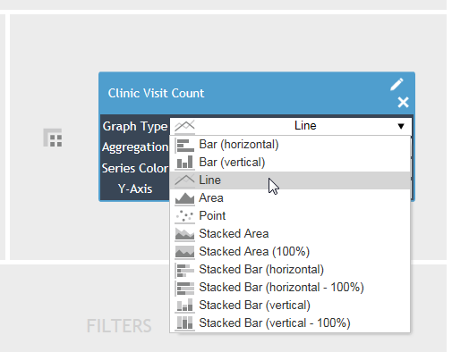
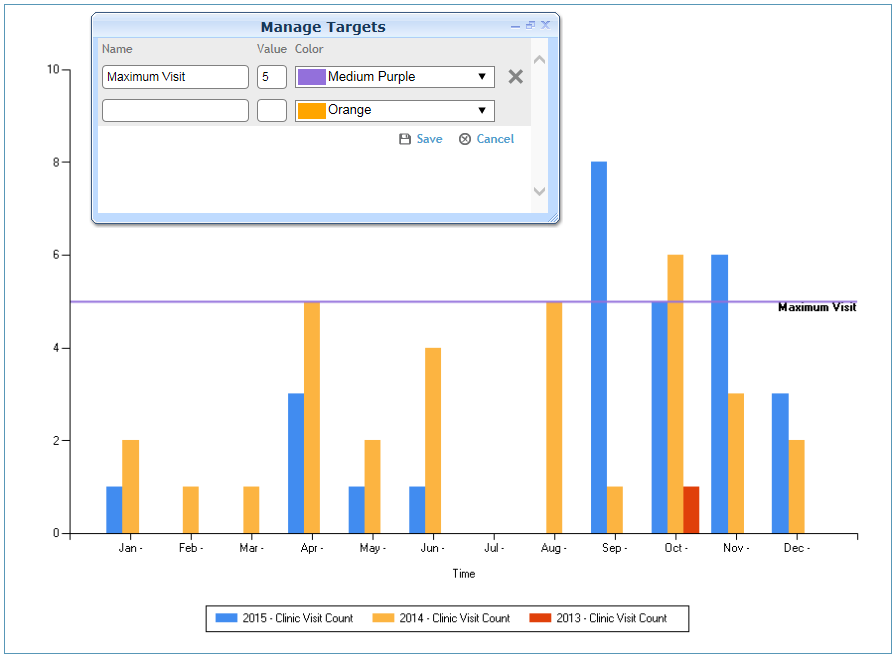
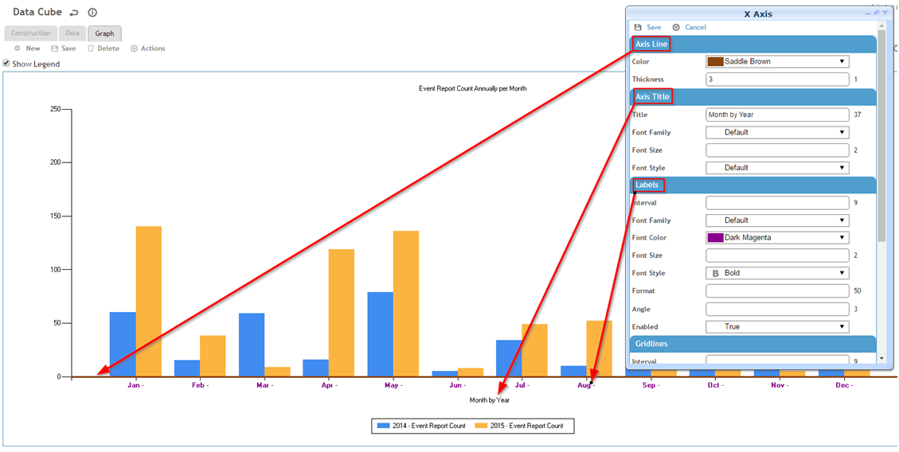
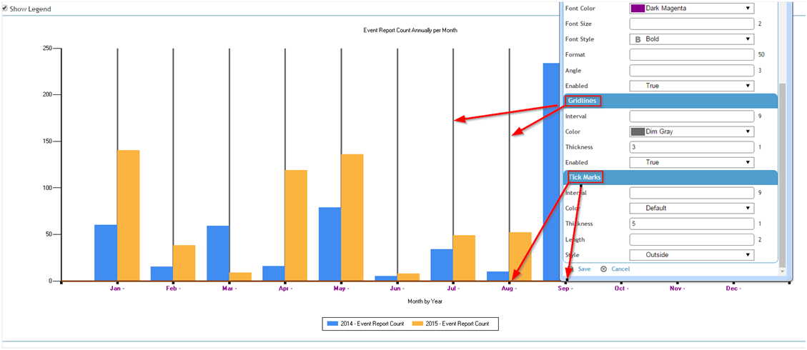
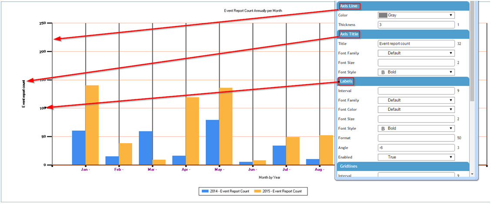
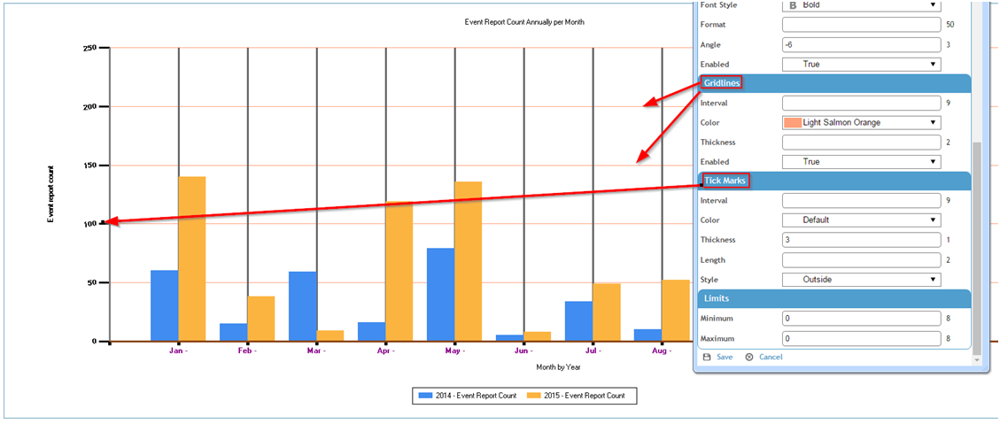
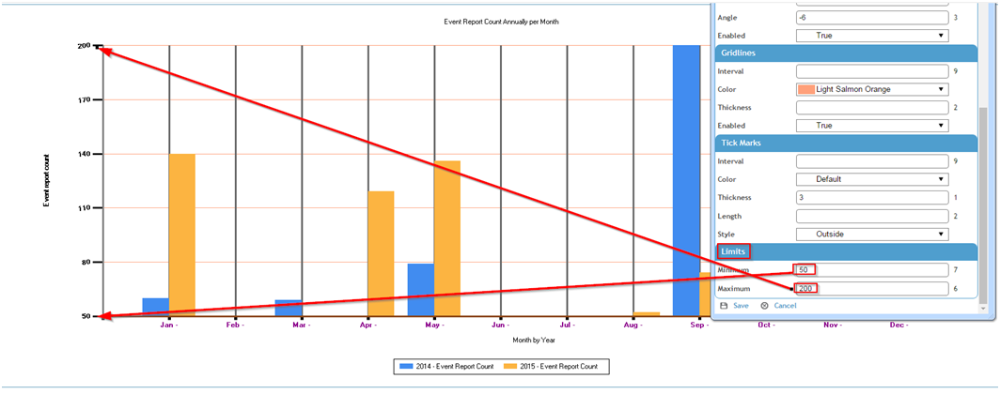

Cority provides several graph types. To change the graph type, click the Edit icon of a measure in the Values drop area, and select a graph type. Click the Graph tab to see the data presented in the new format.

A target allows you to visually compare returned values with an expected result.
In the Graph view, choose Actions»Manage Targets.
Enter the label for the target; this will appear on the graph.
Enter the target value and a line color.
In the following example, a target visit count of 5 visits has been set for the location.

To change appearance of the line, title, labels, gridlines, or tick marks, choose Actions»Format X Axis.


To change appearance of the line, title, labels, gridlines, tick marks, or limits, choose Actions»Format Y Axis.


Optionally set limits to filter the data to an upper and lower limit; for example you may only want to see the event report counts from 50 up to 200.
